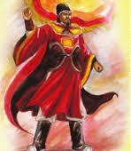

Việt Vương họ Triệu, húy là Quang Phục. Nam Đế họ Lý, húy là Phật Tử, đều là bộ tướng của Tiền Lý Nam Đế Lý Bôn cả. Thời Lương Vũ Đế, ở Giao Châu ta, huyện Thái Bình có Lý Bôn, đời đời làm hào trưởng, có tài lạ hơn người, thường có cái phong độ của Tiêu, Tào. Lại có Tinh Thiều giỏi về chữ nghĩa, văn học xuất sắc, đi thi cầu làm quan. Lại bộ Thượng thư nhà Lương là Sái Tổn cho rằng họ Tinh xưa nay chưa có ai là người giỏi, nhưng mà người này có phong độ khả quan thì cũng cho làm chức Môn lang ở Quảng Dương. Thiều lấy làm nhục; cùng với Bôn trở về cố quận. Nhân quan Thứ sử Vũ lâm hầu là Tiên Tư tàn bạo, việc hành chính rất mất lòng người, hai người bèn ngầm tính kế chống lại.

Khi đó Bôn trông coi châu Cửu Đức, liên kết với hào kiệt chín huyện, khí giới tinh nhuệ, cùng nhau khởi binh đánh cho Thứ sử Tiêu Tư phải chạy về Quảng Châu. Bôn ra chiếm đóng châu thành. Gặp lúc ấy người Lâm Ấp vào cướp đất Nhật Nam. Bôn sai tướng Phạm Tu đánh ở Cửu Đức, thu thắng lợi lớn, quân giặc tan hết. Bôn bèn tự xưng là Việt Vương, đặt trăm quan chức, đổi kỷ nguyên là Thiên Đức, đặt Quốc hiệu là Vạn Xuân. Vua nhà Lương nghe thấy thế bèn phong Thứ sử Quảng Châu là Trần Bá Tiên làm Thứ sử Giao Châu. Tiên nghe nói Lý Bôn xưng Vương, bèn đem quân đánh. Bôn đánh nhau bị bất lợi, lui về động Khuất Lạo, mắc bệnh mà chết. Kể từ lúc xưng Vương hiệu tức là năm Lương Đại Dồng thứ bảy (541) đến năm Lương Thái Thanh thứ hai (548) là lúc chết thì được tám năm.
Triệu Quang Phục vốn là người Chu Diên, làm chức Tả tướng quân của Bôn. Ở đất Chu Diên có một cái đầm lớn, rộng và sâu, không thể đo được bằng dặm. Bôn đã chết, Quang Phục bèn thu thập binh lính tản mát của Bôn được hai vạn người về để điểu khiển chỉ huy, vào ẩn trong đầm. Đêm thì ra cướp trại giặc, ngày thì ẩn nấp. Bá Tiên sai người do thám biết rằng đó là Quang Phục, bèn xuất quân đánh dẹp, nhưng không thể làm gì được. Mọi người suy tôn ông làm Dạ Trạch vương. Quang Phục ở trong đầm một năm. Một đêm thấy có rồng vàng tháo cái móng chân cho Quang Phục và bảo:
- Đem cái này gài lên mũ đâu mâu. Quân giặc trông thấy, tự nhiên phải sợ phục.
Gặp khi nhà Lương có việc phải gọi Bá Tiên về phương Bắc, lưu tướng là Dương Sằn ở lại trấn giữ thay Bá Tiên coi việc quân. Quang Phục từ sau khi được móng rồng, mưu lược lại càng khác thường, đánh đâu thắng đấy. Lại nhân Bá Tiên về phương Bắc bèn đem quân đánh Sằn. Sằn chống đánh lại, nhưng vừa trông thấy mũ đâu mâu thì lập tức thua trận và chết. Quang Phục vào chiếm đóng thành Long Biên, cai trị hai xứ Lộc Loa, Vũ Ninh, tự xưng là Nam Việt quốc vương.
Phật Tử là em họ của Lý Bôn. Lý Bôn chết thì Phật Tử theo anh của Bôn là Thiên Bảo dẫn ba vạn quân chạy lên vùng người Di, Lạo. Bá Tiên treo giải thưởng để tìm bắt, nhưng không được. Thiên Bảo đến động Dã Năng ở đầu nguồn sông Thao, thấy cảnh ở đấy đẹp đẽ, đất đai sản vật phì nhiêu, đất mầu mỡ mà lại rộng phẳng, bèn xây thành mà ở. Người kéo đến ở, tụ tập ngày một đông, trí năng ngày một rộng khắp, bèn trở thành nước Dã Năng. Mọi người bèn suy tôn Thiên Bảo lên làm Đào Lang vương. Chẳng bao lâu, Thiên Bảo chết không có con. Mọi người bàn bạc tôn Phật Tử lên thay. Vừa lúc nghe tin Bá Tiên về phương Bắc, Phật Tử bèn dẫn quân xuống phía đông. Người xung quanh khuyên Phật Tủ xưng đế. Phật Tử nghe theo, nhân đó xưng hiệu là Nam Đế, đánh nhau với Việt Vương ở Thái Bình, tất cả năm trận, mộc giáo ngút ngàn, tên đá như mưa, mà chưa phân ai được ai thua. Nam Đế ít quân phải rút lui, biết Việt Vương có thuật lạ bèn xin giảng hòa. Việt Vương cũng nghĩ tình Nam Đế là thuộc dòng họ của Lý Bôn, bèn chia nước ra, lấy địa giới là châu Quân Thần, để cùng cai trị. Nam Đế đóng ở Ô Diên, sai con là Nhã Lang sang Việt Vương cầu hôn. Việt Vương gả con gái là Cảo Nương cho. Tình nghĩa mật thiết, đàn sắt đàn cầm hòa nhịp. Nhã Lang ngầm hỏi Cảo Nương rằng:
- Hai nước trước kia là kẻ thù, nay là thông gia, lòng trời tác hợp được duyên lạ như thế này. Năm trước hai nước đánh nhau, vua cha binh cơ thần diệu hơn hẳn cha ta, không hiểu có cái thuật lạ gì mà lại đi tới mưu hay như vậy.
Cảo Nương vốn là phận đàn bà kim chỉ, làm sao mà hiểu được thói đời sóng gió, bèn đưa mũ đâu mâu có móng rồng của Việt Vương cho xem, kể rõ đầu đuôi, và nói:
- Vua cha thiếp xưa nay thắng kẻ địch, là nhờ có vật này.
Nhã Lang ngầm dùng mưu thay móng rồng, rồi bảo Cảo Nương:
- Ta làm Phò mã đã lâu, nay nhớ đến cha mẹ. Há lại có thể say tình chăn gối mà bỏ phận sớm tối ngọt bùi. Ý ta muốn định tạm về vấn an cha mẹ thì mới tỏ được chí nguyện. Chỉ ngại rằng đường sá xa xôi, đi lại vất vả, không thể sớm đi mà tối đến được. Tan đi thì nhiều, tu lại thì ít, buồn đau xiết kể. Sau khi ta về nước, nếu có điều gì không lành xảy ra, nàng đi theo vua cha đến nơi nào thì rắc lông ngỗng để dễ cho việc tìm kiếm của ta.
Nhã Lang ra về, đem tất cả trình bày với Nam Đế. Nam Đế cả mừng, lập tức đem quân kéo thẳng đến đất của Việt Vương, như đi vào đất không người. Việt Vương không hiểu ra thế nào, đội mũ đâu mâu ra cự chiến đón đánh Nam Đế. Nhưng thần cơ đã bị tước mất, binh khí không thể phấn chấn được. Nhà vua tự biết không chống nổi, dắt con gái chạy về phía nam, tìm chỗ đất hiểm để trốn tránh. Quân địch bám gót theo sát. Nhân đến một chốn châu phủ, nghỉ để lấy hơi, thì người tùy tòng lại báo:
- Quân Nam Đế đã đến rồi!
Nhà vua sợ quá, hô to:
- Hoàng Long thần vương không giúp ta sao?
Bỗng thấy rồng vàng chỉ mà nói:
- Chắng phải ai đâu. Chỉ vì con gái vua là Cảo Nương rắc lông ngỗng dẫn đường cho địch. Đó chính là quân ác tặc, không giết đi còn chờ gì nữa?
Nhà vua quay lại lấy dao chém, con gái rơi chìm xuống nước. Nhà vua cưỡi ngựa chạy đến cửa biển Tiểu Nha, nghẽn lối, lại quay trở về, nhằm phía đông đi đến của biển Đại Nha, than rằng:
- Ta đến đường cùng rồi.
Bỗng thấy rồng vàng rẽ nước thành đường mà dẫn đi. Nhà vua đi vào nước rồi thì nước khép lại như cũ. Quân Nam Đế đến nơi, mênh mông chẳng biết nhà vua đã đi theo hướng nào, bèn dẫn nhau quay về. Việt Vương giữ nước mười chín năm, kể từ năm Tân Mùi, niên hiệu Lương Đại Bảo thứ hai (551) đến năm Ký Sửu (569), niên hiệu Trần Đại Kiến thứ nhất, thì mất nước. Người đời thấy linh dị, bèn lập miếu ở cửa biển Đại Nha [1]. Năm Trùng Hưng thứ nhất (1235), sách phong là Minh Đạo hoàng đế, năm Trùng Hưng thứ tư (1288) ban thêm cho hai chữ “Khai cơ”. Năm Hưng Long thứ 21 (1313) ban thêm cho bốn chữ “Thánh liệt thần vu”.
Nam Đế đã thôn tính xong Triệu Việt Vương, bèn thiên đô đến Lộc Loa và Vũ Ninh, phong anh là Xương Ngập làm Thái Bình hầu giữ thành Long Biên, phong Đại tướng Lý Tấn Đỉnh làm An Ninh hầu, giữ thành Ô Diên. Nam Đế làm vua ba mươi năm thì chết, kể từ năm Tân Mão (571), niên hiệu Trần Đại Kiên thứ ba đến năm Nhâm Tuất (602), đời Tùy Văn Đế, niên hiệu Nhân Thọ thứ hai.
Nam Đế chết, con là Sư Lợi lên làm vua, được mấy năm thì bị tướng nhà Tùy là Lưu Phương diệt. Nam Đế đã chết, người trong nước lập đền thờ khắp nơi. Miếu ở cửa biển Tiểu Nha và ở phường An Khang [2] rất là linh dị. Năm Trùng Hưng thứ nhất, sắc phong là “Anh liệt trọng uy Hoàng đế”. Năm Trùng Hưng thứ tư, tặng thêm hai chữ “Nhân hiếu”. Năm Hưng Long thứ 21, tặng thêm bốn chữ “Khâm minh thánh vũ”. Hai miếu ấy đến nay hương hỏa bất tuyệt, linh ứng đã rõ từ lâu.
Chú thích:
[1] Thuộc địa phận làng Độc Bộ, huyện Nghĩa Hưng, Nam Định (nay là Nam Hà).
[2] Theo sách Nam Định tỉnh địa dư (A.609, tờ 921b) chép: Đền thờ Hậu Lý Nam Đế ở cửa Tiểu Nha nay là địa phận xã Phù Sa, huyện Nghĩa Hưng, Nam Định. Đền này đối diện với đền làng Độc Bộ thờ Triệu Việt Vương. Về sau qua một đêm sấm sét dữ dội, mưa gió cực to, cả ngôi đền bị đánh bạt xuống sông. Từ đó mất đền. Dân làng Độc Bộ dựng lại đền, nhưng không thờ Hậu Lý Nam Đế nữa, mà thờ Ngô Nhật Khánh, một trong 21 vị sứ quân đời sau.